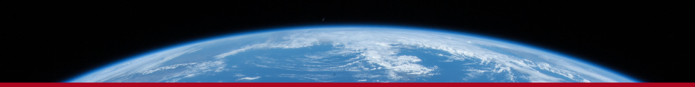

|  | ||||
Welcome to the 48th annual University of Arizona Geosciences Symposium (GeoDaze) |
||||
|
Keynote Speaker The keynote speaker for GeoDaze 2020 is Dr. Terry Plank. Her research focuses on magmas associated with the plate tectonic cycle and she is known for her studies of subduction zones. Her impact across the discipline has been substantial, with contributions including (but not limited to) understanding the effects of water on magma evolution, quantifying the roles of decompression, temperature, and water in driving mantle melting, and tracing sediment geochemically from the seafloor to arc volcanoes. Photo and video courtesy of the John D. & Catherine T. MacArthur Foundation. |
|
|||
|
If you have any questions or comments regarding the 2020 Geosciences Symposium please e-mail us. |
||||